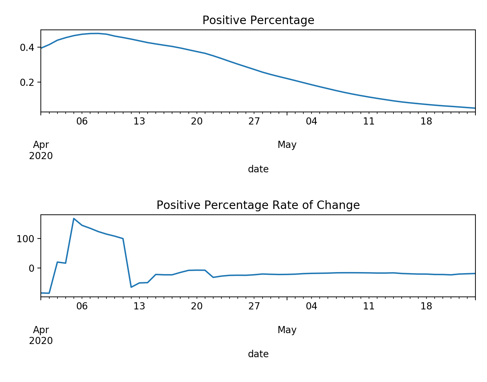

Press play to view each visual dynamically over time! The dashboard begins on April 1st and runs through the most recent data pull (May 25th).
Positive case growth is a metric that allows us to understand what stage of logistic growth each state is in.
A 7-day smoothing average is applied to remedy daily spikes due to reporting inconsistency.
The Map displays positive case growth geographically.
The Positive Percentage allows us to supplement positive case growth with testing information.
When we see positive case growth, naturally we ask, is this because we are testing more or is it because the virus is spreading? This is why we look at the positive percentage dynamically. If the positive percentage is growing and positive cases are also growing, it indicates the virus is spreading. If the positive percentage is decaying, and positive cases are growing, it indicates that we are testing more.

A 7-day smoothing average has been applied to remedy daily spikes due to reporting inconsistency.
Normalized testing indicates how each state has ramped up testing over time.
We are dividing by total number of tests in the last week by each state's population to look at testing in the context of each states. We all know Wyoming does not need as many tests as New York!
The Leaderboard's purpose is to summarize information from the other visuals and alert when positive case growth is not giving us the complete picture of what is going on.